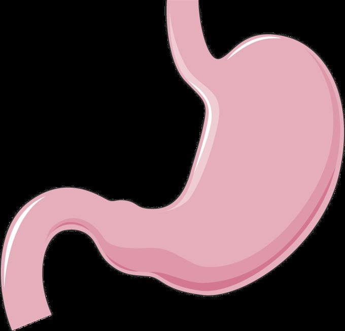
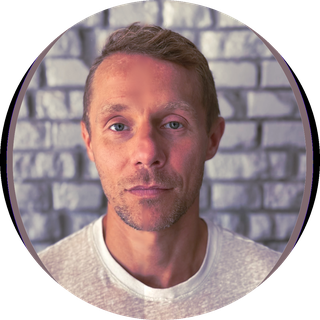
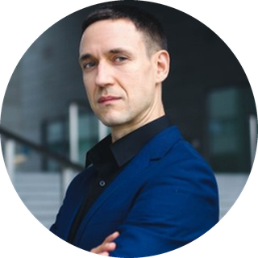
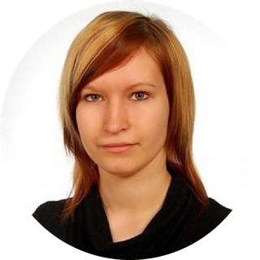

LookBeyond helps research teams find non-obvious connections across documents, articles, and topics — combining semantic search, graph visualization, and AI explanations.
Each one runs on the live graph: five documents that share no keyword, four hops, every step explained. Nothing to install, no account.
A novelist is convicted of pushing his wife down the stairs. Years later, the defence proposes an owl.

Laboratoires Servier · CC BY-SA 3.0Everyone knows it does. It was a bacterium — and a doctor who swallowed it to prove the point.
It is used to find pollution nobody can see, and it burns a great deal of power doing so.
Discovery tools are only as defensible as the corpus underneath them. Ours is built licence first: nothing is downloaded until the terms are on file, and every document keeps the licence it arrived under.
Each source's licence page is captured with a date and a checksum, and the importer refuses to run without it. When the wording later changes, we are told.
Open access is not one thing. Records that forbid commercial use or derivative work are skipped individually, not waved through because the aggregator looked permissive.
Every document carries its source, its licence and its link, so any claim you build on a route can be followed back to where it came from.
Visualize relationships between articles, topics, and concepts as an interactive network. See clusters and bridges you'd never find through linear search.
Search by meaning, not keywords. Input your research context in natural language — the graph reranks results and surfaces semantically related paths.
For every discovered connection, LookBeyond generates an AI explanation — so you understand why two seemingly unrelated topics are linked.
Save exploration paths, build curated knowledge maps, and return to your research exactly where you left off — across sessions and topics.
Browse content through structured category trees. Drill deep into subtopics without losing the broader context of your investigation.
Connect any two concepts and let the graph reveal the shortest — and most surprising — routes between them through the knowledge space.
Track how geopolitical events connect across military, economic, and historical dimensions. Discover hidden networks behind policy shifts before they become obvious to everyone.
Find interdisciplinary connections between papers from different fields. Surface the concepts and researchers that bridge your domain to unexpected neighbors.
Map relationships between actors, events, and documents. LookBeyond makes pattern recognition systematic — not dependent on what you already know to search for.
Find a place where you can monitor the thematic reach of your content, check connections between them, and find blind spots as inspiration for new thematic series. There's power in connections!.
What you need usually sits between documents, not inside any one of them. Finding it takes the kind of time only large research teams can afford.
Most tools connect things for you — a link, a “see also”, a “you might also like”. They are good at returning you to where you have been, and poor at taking you somewhere you had no reason to ask about.
LookBeyond works the other way round. You say what you are looking for, as narrow as you like, and it lays out the route between ideas with the reason each step holds. Nothing is suggested because of what you clicked last week. The question stays yours.
We are looking for a small number of partners — collaborators, not beta testers. Founding partners get free access, forever.
No chief-something titles yet — at this stage they would describe an org chart that does not exist. LookBeyond is pre-commercial: three co-creators shaping it with early partners before anything is sold.

Decides what the product is for and builds the licensed corpus underneath it — which sources may be used, what each document carries with it, and which routes are worth showing. Former PM at HPE, IBM, Google and DataWalk..

Author of a book on graph neural networks, speaking on GraphRAG architecture at Data Science Summit in November. Works on the graph model and on the quality of the routes it produces — whether a connection holds, and how far it reaches.

Responsible for what someone understands in the first minute. A graph is easy to make impressive and hard to make usable; her job is the second one.
Three questions to choose from. Watch a route being built across the graph, then keep exploring from where it ends. Nothing to install, no account.
See the routes →A small number of research organisations shape LookBeyond around how their work actually happens — not as beta testers, as collaborators. Founding partners get free access, forever.
Tell us about your team →Papers, reports, filings — your own set, in a private space, to see which of your documents turn out to be connected, and to what outside them.
Ask for a test →We're inviting a small number of research organisations to shape LookBeyond around the way their work actually happens. Founding partners get free access — forever.